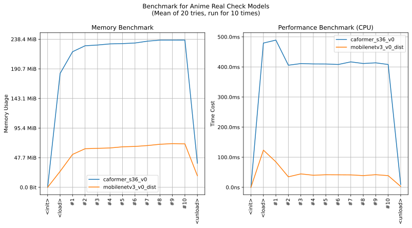

imgutils.validate.real¶
- Overview:
A model for classifying anime real images into 2 classes (
anime,real).The following are sample images for testing.

This is an overall benchmark of all the real classification models:
The models are hosted on huggingface - deepghs/anime_real_cls.
anime_real_score¶
-
imgutils.validate.real.anime_real_score(image: Union[str, os.PathLike, bytes, bytearray, BinaryIO, PIL.Image.Image], model_name: str = 'mobilenetv3_v0_dist') → Dict[str, float][source]¶ Get the scores for different types in an anime real.
- Parameters:
image (ImageTyping) – The input image.
model_name (str) – The model name. Default is ‘mobilenetv3_v0_dist’.
- Returns:
A dictionary with type scores.
- Return type:
Dict[str, float]
- Examples::
>>> from imgutils.validate import anime_real_score >>> >>> anime_real_score('real/anime/1.jpg') {'anime': 0.9999716281890869, 'real': 2.8398366339388303e-05} >>> anime_real_score('real/anime/2.jpg') {'anime': 0.9992202520370483, 'real': 0.0007797438884153962} >>> anime_real_score('real/anime/3.jpg') {'anime': 0.9999709129333496, 'real': 2.905452492996119e-05} >>> anime_real_score('real/anime/4.jpg') {'anime': 0.9999765157699585, 'real': 2.3499671442550607e-05} >>> anime_real_score('real/anime/5.jpg') {'anime': 0.9994087219238281, 'real': 0.0005913018831051886} >>> anime_real_score('real/anime/6.jpg') {'anime': 0.9999759197235107, 'real': 2.4061362637439743e-05} >>> anime_real_score('real/anime/7.jpg') {'anime': 0.9999052286148071, 'real': 9.475799015490338e-05} >>> anime_real_score('real/anime/8.jpg') {'anime': 0.9999759197235107, 'real': 2.403173675702419e-05} >>> anime_real_score('real/real/9.jpg') {'anime': 1.5848207794988411e-06, 'real': 0.9999984502792358} >>> anime_real_score('real/real/10.jpg') {'anime': 0.0010207017185166478, 'real': 0.9989792704582214} >>> anime_real_score('real/real/11.jpg') {'anime': 2.2124368115328252e-06, 'real': 0.9999977350234985} >>> anime_real_score('real/real/12.jpg') {'anime': 1.6512358342879452e-05, 'real': 0.9999834299087524} >>> anime_real_score('real/real/13.jpg') {'anime': 6.359853614412714e-06, 'real': 0.9999936819076538} >>> anime_real_score('real/real/14.jpg') {'anime': 1.600314317329321e-05, 'real': 0.9999840259552002} >>> anime_real_score('real/real/15.jpg') {'anime': 1.5589323083986528e-05, 'real': 0.9999843835830688} >>> anime_real_score('real/real/16.jpg') {'anime': 1.5513256585109048e-05, 'real': 0.9999845027923584}
anime_real¶
-
imgutils.validate.real.anime_real(image: Union[str, os.PathLike, bytes, bytearray, BinaryIO, PIL.Image.Image], model_name: str = 'mobilenetv3_v0_dist') → Tuple[str, float][source]¶ Get the primary anime real type and its score.
- Parameters:
image (ImageTyping) – The input image.
model_name (str) – The model name. Default is ‘mobilenetv3_v0_dist’.
- Returns:
A tuple with the primary type and its score.
- Return type:
Tuple[str, float]
- Examples::
>>> from imgutils.validate import anime_real >>> >>> anime_real('real/anime/1.jpg') ('anime', 0.9999716281890869) >>> anime_real('real/anime/2.jpg') ('anime', 0.9992202520370483) >>> anime_real('real/anime/3.jpg') ('anime', 0.9999709129333496) >>> anime_real('real/anime/4.jpg') ('anime', 0.9999765157699585) >>> anime_real('real/anime/5.jpg') ('anime', 0.9994087219238281) >>> anime_real('real/anime/6.jpg') ('anime', 0.9999759197235107) >>> anime_real('real/anime/7.jpg') ('anime', 0.9999052286148071) >>> anime_real('real/anime/8.jpg') ('anime', 0.9999759197235107) >>> anime_real('real/real/9.jpg') ('real', 0.9999984502792358) >>> anime_real('real/real/10.jpg') ('real', 0.9989792704582214) >>> anime_real('real/real/11.jpg') ('real', 0.9999977350234985) >>> anime_real('real/real/12.jpg') ('real', 0.9999834299087524) >>> anime_real('real/real/13.jpg') ('real', 0.9999936819076538) >>> anime_real('real/real/14.jpg') ('real', 0.9999840259552002) >>> anime_real('real/real/15.jpg') ('real', 0.9999843835830688) >>> anime_real('real/real/16.jpg') ('real', 0.9999845027923584)